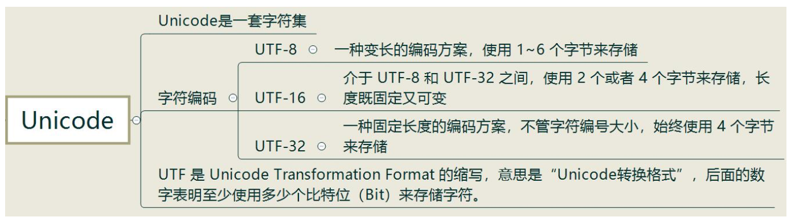

第一章
读取数量不定的输入数据
1 | while (std::cin>>value) |
while 会一直执行直到遇到文件结束符（或错误输入）。
在这里clion对ctrl +d的是stop and rerun， 所以结束输入就不能用ctrl+d，但可以输入一个不是int的数据类型来结束它。
第二章（变量和基本类型）
基本数据类型
当我们把一个非布尔类型的算数值赋给布尔类型时，初始值为0则结果为false，否则结果为true。
当我们把一个布尔值赋给非布尔类型时，初始值为false则结果为0，初始值为true则结果为1。
| 类型 | 最小尺寸 |
|---|---|
| char | 8 bit |
| wchar_t | 16 bit |
| int | 16 bit |
| long | 32 bit |
| long long | 64 bit |
| float | 32 bit |
| double | 64 bit |
| long double | 96 or 128 bit |
当一个算数表达式中既有无符号数又有int时，那个int值就会转成无符号数。比如：
unsigned u = 10;
int i = -42
std::cout<< u + i << std::endl; 如果int占32位，输出4294967264。
以0开头的整形代表8进制，以0x或0X的开头代表十六进制。
科学计数法，其中指数部分用E或e标识。50 = 5e1, 0.01 = 1e-2
单引号字符char，双引号字符串。
字符串String字面值的类型实际上是由常量字符构成的数组（array）。
编译器在每个字符串的结尾处添加一个空字符（’\0’)，因此，字符串字面值的实际长度要比他的内容多1。例如，字面值’A’表示的是单独的字符A，而字符串”A”则代表了一个字符的数组，该数组包含两个字符：一个是字母A，另一个是空字符。
‘a’就是char，L’a’就是wchar_t
char占一个字节，wchar_t占两个字节，也就是16个比特（bit），最大值就是216-1=65535，到这里读者可以看出宽字符和窄字符最大的区别就是占字节大小的不同

10u: unsigned
3.14L: Long double
如’\012’就是八进制数012所对应的字符，也就是ASCII码10所对应的字符，即换行
需要注意的是转义序列在程序中是被当作字符而不是字符串来使用的
1 | cout<<'2'<<'\t'<<'M'<<'\n'; |
变量
默认初始化
三条性质：
1.定义在任何函数体外的变量会被初始化为0。
2.定义在函数体内部的变量不会被初始化。
3.类的对象未被初始化，则初值由类决定。
声明(declaration)和定义(definition)
declaration: say the function exists. 在一个cpp文件中调用另一个cpp文件（一个函数），需要在cpp中声明这个被调用的函数
definition: what the function is.
①变量定义：用于为变量分配存储空间，还可为变量指定初始值。程序中，变量有且仅有一个定义。
②变量声明：用于向程序表明变量的类型和名字。
③定义也是声明：当定义变量时我们声明了它的类型和名字。
④extern关键字：通过使用extern关键字声明变量名而不定义它。
1、定义包含了声明，但是声明不包含定义，
如 int a = 0; //定义并声明了变量 a
extern int a; //只是声明了有一个变量 a 存在，具体 a 在哪定义的，需要编译器编译的时候去找。
2、函数也是类似，定义的时候同时声明。但如果只是声明，编译器只知道有这么个函数，具体函数怎么定义的要编译器去找。
void fun1(); //函数声明
void fun1(){ //函数定义
cout<<”fun1”<<endl;
}
复合类型(具体见另一篇文章)
引用
引用（&）是标识符的别名（引用并非为对象，相反的，它只是为一个已经存在的对象所起的另外的名字）
为引用赋值，实际上是把值赋给了与引用绑定的对象。获取引用的值，实际上是获取了与引用绑定的对象的值。同理，以引用作为初始值，实际上是以与引用绑定的对象作为初始值。
定义一个引用时，必须同时对它进行初始化(比如 int &a = b, 之前已经定义b = 10)，使它指向一个已存在的对象(b)
例如：
int i, j;
int &ri = i //定义int的引用ri，并初始化为变量i的引用
一旦一个引用被初始化后，引用和初始值对象绑定在一起，就不能改为指向其他对象
对引用进行修改，也就是等于对和引用绑定的对象进行修改。(可以把绑定之后的引用和对象看成一种东西)
指针
可以通过指针来间接访问内存
定义指针
int a =10;
数据类型 * 指针变量
int * p;
让指针记录变量a的地址， &这个操作符就是取地址。
p = &a；
使用指针
可以通过解引用的方式来找到指针的内存，找到指针p（原数据的地址）中的原数据
- p = 1000；//更改之后a的值也变为1000
指针所占用的内存空间
在32位操作系统：占用4个字节
在64位操作系统：占用8个字节(所有指针，int *，float * ，char *……)空指针和野指针
空指针：指针变量指向内存为0的空间
用途：初始化指针变量
注意：空指针指向的内存是不可以访问的, 0~255为系统占用内存
int * p = NULL;
野指针：指针变量指向非法的内存空间
int * p = (int * )0x1100; 自己定义的一个16进制数，自己定义的一块内存
const限定符
常量表达式
常量表达式（const expression）是指不会改变并且在编译过程就能得到计算结果的表达式。
常量表达式主要是允许一些计算发生在编译时，即发生在代码编译而不是运行的时候。这是很大的优化：假如有些事情可以在编译时做，它将只做一次，而不是每次程序运行时。需要计算一个编译时已知的常量，比如特定值的sine或cosin？确实你亦可以使用库函数sin或cos，但那样你必须花费运行时的开销。使用constexpr，你可以创建一个编译时的函数，它将为你计算出你需要的数值。用户的电脑将不需要做这些工作。
一个对象是不是常量表达式由它的数据类型和初始值共同决定：
1 | const int max_files = 20; // 是常量表达式 |
尽管staff_size的初始值（27）是个字面常量值，但是由于它的数据类型只是个普通的int而非const int所以不属于常量表达式
尽管sz本身是个常量，但是具体值到运行时才能获取到，所以也不是常量表达式
常量表达式就是等号左右两边都是常量的表达式。
一般来说，如果你认定变量是一个常量表达式，那就把它声明成constexpr类型
1 | constexpr int mf = 20; //20是常量表达式 |
常量表达式必须是字面值类型：算数类型，引用类型和指针类型。
非字面值类型：自定义类Sales_item, IO库，String类不属于字面值类型，也就不能被定义成constexp指针的初始值必须是nullptr或者是0，或者是储存于某个固定地址中的对象。
函数体内定义的变量一般来说并非存放在固定地址中，因此constexpr指针不能指向这样的变量。相反的，定义于所有函数体之外的对象其固定地址不变，能用来初始化constexpr指针。
constexpr声明中如果定义了指针，限定符constexpr仅对指针有效，与指针所指的对象无关：
1 | const int *p = nullptr; //p是一个 指向整型常量 的指针 |
处理类型
类型别名
有两种方法可以定义类型别名。
- 传统的方法是使用关键字typedef：
1
2
3typedef double wages; //wages是double的同义词,之后出现wages就和出现double一样
wages x = 10.1；
typedef wages base, *p; //base是double的同义词，p是double*的同义词 - 使用别名声明来定义类型的别名：
相对来说更加直观、简单1
2
3
4using SI = Sales_item; //SI是Sales_item的同义词
using x = double;
x number = 666.66//之后使用x就像使用double一样
这种方法的关键字using作为别名声明的开始，其后紧跟别名和等号，起作用是把等号左侧的名字规定成等号右侧的类型的别名。auto类型说明符
auto类型说明符：auto让编译器通过初试值来推算变量的类型。auto定义的变量必须有初始值。此处编译器将根据val1和val2相加的结果来推断item的类型。如果val1和val2是类Sales_item的对象，则item的类型就是Sales_item;如果这两个变量类型是double，则item的类型就是double，以此类推。1
auto item = val1 + val2;
复合类型，常量和auto
使用引用其实是使用引用的对象，特别是当被用作为初始值时，真正参与初始化的其实是引用对象的值。auto会忽略掉顶层const（常量指针），同时底层const（指向指针的常量）则会保留下来，比如当初始值是一个指向常量的指针时。1
2int i = 0, &r = i;
auto a = r; // a是一个整数（r是i的别名，而i是一个整数）
但是
1 | const int ci = i, &cr = ci; |
注意！！
1 | const int i = 42; |
decltype
作用：希望从表达式的类型推断出要定义的变量，但是不想用该表达式的值初始化变量。它的作用是选择并返回操作数的数据类型。
1 | decltype(f()) sum = x; //sum的类型就是函数f的返回类型 |
如果decltype使用的表达式是个变量，则decltype返回该变量的类型（包括顶层const和引用在内）：
1 | const int ci = 0, &cj = ci; |
decltype和引用
1 | int i =42, *p = &i, &r = i; |
对于decltype：
- 推测引用变量本身的类型得到的仍是引用
- 如果表达式的内容是解引用操作（*p），decltype将得到引用类型
- 推测变量的类型时，如果多加了一层括号，结果差别很大。双层括号的结果永远是引用，而decltype（variable）单层括号结果只有当varible本身就是一个引用时才是引用。
总结一下上面的区别
- typedef, using: 把一些double，int等已知的数据类型重命名，命名成自己想要的名称。
- auto：通过初始值来推算变量的数据类型
- decltype：把某一个变量的数据类赋给另一个变量，让这两个数据变量类型相同。
auto和decltype的区别
如果面对一个变量是引用，那么auto会把那个类型看作是和该引用绑定对象的类型（int），而decltype会把它看作是引用本身的引用类型（int &）
1 | int i = 42, &r = i; |
自定义数据结构
数据结构是把一组相关的数据元素组织起来然后使用他们的策略和方法。就比如说int就是把所有整数作为一种数据类型，所以我们也可以自己定义某一类具有共同点的元素作为数据类型。
比如说Sales_data类型
1 | struct Sales_data{ |
自定义数据结构以关键字struct开始，紧跟着类名和实体，最后的分号不能省略
还有一种自定义结构以class作为关键字，也就是常说的类。以后会经常遇到。
struct和class的区别
在C++中struct和class的唯一区别就在于默认的访问权限不同, 继承的时候不推荐使用struct
- struct默认权限为public
- class默认权限为private类内部定义的名字必须唯一，但是可以与类外部定义的名字重复。
1
2
3
4
5
6
7
8
9
10
11
12class C1{
int a;
};
struct C2{
int a;
};
int main(){
C1 c1; //实例化
c1.a = 10; //错误，默认的情况下class的成员为private，只能在类内访问，不能在类外访问
C2 c2；
c2.a = 10； //正确，默认的情况下struct的成员为public，既能在类内访问，又能在类外访问
}
类体右侧的表示结束的花括号后必须写一个分号，因为类体后面可以紧跟变量名以示对该对象的定义所以分号不可少。类数据成员（attribute）
- 类的数据成员定义了类的对象的具体内容
- 每个对象有自己的一份数据成员拷贝
- 修改一个数据成员，不会印象其他对象
- 创建对象时，类内初始值将用于初始化数据成员。没有初始值的成员将被默认初始化（0，空字符…）。
头文件
为了确保各个文件中类的定义一致，类通常被定义在头文件中，而且类所在头文件的名字应与类的名字一样，例如把Sales_data类定义在名为Sales_data.h的头文件中。
头文件通常包含那些只能被定义一次的实体，如类、const变量和constexpr变量等
头文件的书写规范
- #include”header.h” //表明当前文件和”header.h”处于同一工程且同一目录，一般是自己的类文件
- #include<header.h> //表明header.h和当前文件不属于同一工程，是外部目录，一般是标准库
头文件保护符（header guard）
就是为了在主文件中如果多次引用了某个头文件的话，第一次引用会把头文件拷贝进主文件，之后再引用，就不要再把头文件再拷贝过来一次。
/#define 指令把一个名字设置为预处理变量，另外两个指令则分别检查某个指定的预处理变量是否已经定义：#ifdef 当且仅当变量已定义时为真，#ifndef 当且仅当变量未定义时为真。一旦检查结果为真，则执行后续操作直至遇到#endif指令为止。这些功能就能有效地防止重复包含的发生：
1 |
|
后面如果再一次包含Sales_data.h,则#ifndef的检查结果将为假，编译器将会忽略#ifndef到#endif之间的部分。